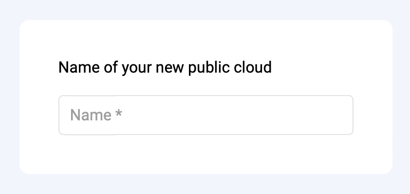
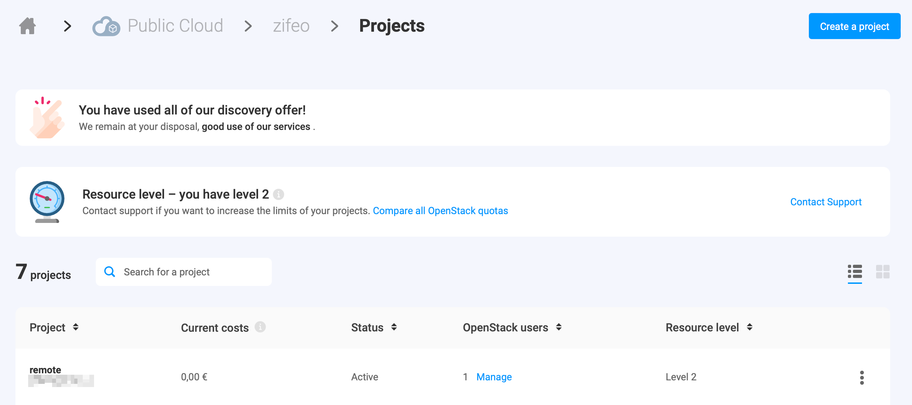
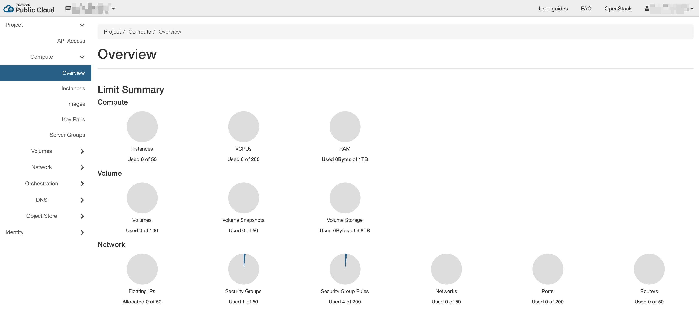
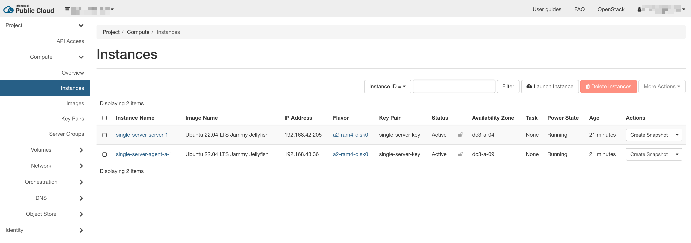

Low-cost Kubernetes cluster on Infomaniak
Kubernetes (k8s) is becoming the de facto standard for container orchestration. While it provides convenient abstractions and solves many pain points, it is not as accessible as running a local copy of Docker1. This makes it harder to learn and get real hands-on experience without being part of a DevOps team or getting ruined quickly.
When looking at popular Kubernetes providers and without going into their complex pricing structure, the lowest price one can find for a managed Kubernetes is roughly $55/month for 4cpu and 15Go2 of RAM available (June 2023).
| Provider | Region | Cluster fees | 4cpu / 15Go | Note |
|---|---|---|---|---|
| GKE | Frankfurt | $73/month | $126 | $74.40/month of free credit |
| AWS | Frankfurt | $73/month | $112 | |
| AKS | West Germany | Free | $112 | $73/month for pro cluster |
| Linode | Frankfurt | $36 | $72 | Only 8Go RAM |
| Scaleway | Paris | Free | $73 | 98% API server availability3 |
| OVH | Frankfurt | Free | $55 | |
| Exoscale | Frankfurt | Free | $136 | $40/month for pro cluster |
| DigitalOcean | Frankfurt | Free | $126 | $40/month for pro cluster |
At that price, it becomes interesting to look at reasonably priced VMs providers like Hetzner or Infomaniak, and install Kubernetes directly on it. This comes at the cost of managing the cluster ourselves and maintaining it over time. While this offers a good learning opportunity, it may also be a source of frustration as the setup can be non-trivial. For this reason, the RKE2 distribution of Kubernetes is a great pick as it offers a good balance between features, security and simplicity.
Regarding the hardware provider, Infomaniak offers currently better price than Hetzner4 and especially gives us with direct access to OpenStack, a well-known open source platform to provision infrastructure (also offered by OVH). This makes it easier to manage the resources using code (IaC) and comes with a good support for Terraform.
Getting started #
You will need an account on Infomaniak, a valid credit card and Terraform installed.
Once you have your Infomaniak account, go on the Public Cloud landing page and click on "get started". Pick a name for your public cloud and enter your credit card details in the checkout page. You will be charged at the end of the month for the resources you used. Note that as of the time of writing this article, Infomaniak offers up to CHF 300.— of free credit during the first 3 months.
You should then see an empty list of OpenStack project (also called tenant in the OpenStack jargon). Click on the "create a project" on the top right, choose a project name and a password for the autogenerated user and click on "create". After a few seconds, you should be redirected to the list of projects and see your newly created project.
You can then click on the project name, and you will be directed on Horizon, the user interface of OpenStack which is useful to follow the progress of the cluster creation.
Terraform OpenStack RKE2 module #
Now, you are jumping into the interesting part. You will use the Terraform OpenStack RKE2 module that takes care of the heavy lifting and deploy a RKE2 cluster on OpenStack for you. Create a new directory and open a main.tf file with the following content:
variable "project" {
type = string
}
variable "username" {
type = string
}
variable "password" {
type = string
}
# authenticate with OpenStack
provider "openstack" {
tenant_name = var.project
user_name = var.username
password = var.password
auth_url = "https://api.pub1.infomaniak.cloud/identity"
region = "dc3-a"
}
# dependency management
terraform {
required_version = ">= 0.14.0"
required_providers {
openstack = {
source = "terraform-provider-openstack/openstack"
version = ">= 1.49.0"
}
}
}This creates 3 variables that will be used to authenticate to the OpenStack API and configure the OpenStack provider and ensure that the latter is using the expected version. If you would like to avoid having to enter your credentials each time, you can create a terraform.tfvars (make sure to add this file to your gitignore and never accidentally share that file) or check the alternative authentication methods of the provider (e.g. cloud with clouds.yaml):
project=PCP-XXXXXXXX
username=PCU-XXXXXXXX
password=XXXXXXXXYou will now declare a cluster with 1 server and 1 agent nodes in main.tf:
module "rke2" {
source = "zifeo/rke2/openstack"
# fixing the version is recommended (follows semantic versioning)
# version = "2.0.5"
# must be true for single server cluster or
# only on the first run for high-availability cluster
bootstrap = true
name = "single-server"
# path to your public key, in order to connect to the instances
ssh_authorized_keys = ["~/.ssh/id_rsa.pub"]
# name of the public OpenStack network to use for the server IP
floating_pool = "ext-floating1"
# allow access from any IP
# it should ideally be restricted to a secure bastion
rules_ssh_cidr = "0.0.0.0/0"
rules_k8s_cidr = "0.0.0.0/0"
# servers hosts Kubernetes control plane + etcd
# and are the only ones exposed to the internet
servers = [{
name = "server"
# 2 cpu and 4Go of RAM is the minimum recommended per server
flavor_name = "a2-ram4-disk0"
image_name = "Ubuntu 22.04 LTS Jammy Jellyfish"
system_user = "ubuntu"
# size of the operating system disk
boot_volume_size = 4
# size of the volume for the RKE2 data (persisted on single-server)
rke2_volume_size = 8
rke2_version = "v1.26.4+rke2r1"
}]
# agents runs your workloads
# and are not exposed to the internet (doable with a load balancer)
agents = [
{
name = "agent-a"
nodes_count = 1
# a2-ram4-disk0 is the minimal meaningful config for agents
# you can also directly go for a4-ram16-disk0 as in the intro
flavor_name = "a2-ram4-disk0"
image_name = "Ubuntu 22.04 LTS Jammy Jellyfish"
system_user = "ubuntu"
boot_volume_size = 4
rke2_volume_size = 8
rke2_version = "v1.26.4+rke2r1"
}
]
# enable automatically agent removal of the cluster
ff_autoremove_agent = true
# output the kubeconfig to the current directory
ff_write_kubeconfig = true
identity_endpoint = "https://api.pub1.infomaniak.cloud/identity"
}And you are ready to go! Run the following commands and wait a few minutes for the cluster to be created (a few more are required to have all the pods running after the core is ready):
terraform init
# ...
# Terraform has been successfully initialized!
# ...
terraform apply
# ...
# Plan: 71 to add, 0 to change, 0 to destroy.
#
# Do you want to perform these actions?
# Terraform will perform the actions described above.
# Only 'yes' will be accepted to approve.
#
# Enter a value: yes
# ...
# Apply complete! Resources: 71 added, 0 changed, 0 destroyed.
cat single-server.rke2.yaml
# apiVersion: v1
# kind: config
# ...
export KUBECONFIG=single-server.rke2.yaml
kubectl get pods --all-namespaces
# NAMESPACE NAME READY STATUS RESTARTS AGE
# kube-system helm-install-openstack-cinder-csi-2rp9z 0/1 Pending 0 2s
# kube-system helm-install-openstack-cloud-controller-manager-4wdzt 0/1 ContainerCreating 0 2s
# kube-system helm-install-rke2-cilium-s5skd 0/1 ContainerCreating 0 2s
# kube-system helm-install-rke2-coredns-kc4ld 0/1 ContainerCreating 0 2s
# kube-system helm-install-rke2-metrics-server-ttt84 0/1 Pending 0 2s
# kube-system helm-install-rke2-snapshot-controller-crd-2sdzt 0/1 Pending 0 2s
# kube-system helm-install-rke2-snapshot-controller-xqzsk 0/1 Pending 0 2s
# kube-system helm-install-rke2-snapshot-validation-webhook-5w9lw 0/1 Pending 0 2s
# kube-system helm-install-velero-4zhq7 0/1 Pending 0 2s
# kube-system kube-apiserver-single-server-server-1 1/1 Running 0 12s
# kube-system kube-controller-manager-single-server-server-1 1/1 Running 0 16s
# kube-system kube-scheduler-single-server-server-1 1/1 Running 0 15s
kubectl get pods --all-namespaces
# NAMESPACE NAME READY STATUS RESTARTS AGE
# kube-system cilium-ngcrp 1/1 Running 0 2m39s
# kube-system cilium-operator-b947b9d8d-zc92l 1/1 Running 0 2m39s
# kube-system cilium-qt7vr 1/1 Running 0 2m39s
# kube-system etcd-single-server-server-1 1/1 Running 0 2m42s
# kube-system helm-install-openstack-cinder-csi-2rp9z 0/1 Completed 0 2m52s
# kube-system helm-install-openstack-cloud-controller-manager-4wdzt 0/1 Completed 0 2m52s
# kube-system helm-install-rke2-cilium-s5skd 0/1 Completed 0 2m52s
# kube-system helm-install-rke2-coredns-kc4ld 0/1 Completed 0 2m52s
# kube-system helm-install-rke2-metrics-server-ttt84 0/1 Completed 0 2m52s
# kube-system helm-install-rke2-snapshot-controller-crd-2sdzt 0/1 Completed 0 2m52s
# kube-system helm-install-rke2-snapshot-controller-xqzsk 0/1 Completed 0 2m52s
# kube-system helm-install-rke2-snapshot-validation-webhook-5w9lw 0/1 Completed 0 2m52s
# kube-system helm-install-velero-4zhq7 0/1 Completed 0 2m52s
# kube-system kube-apiserver-single-server-server-1 1/1 Running 0 3m2s
# kube-system kube-controller-manager-single-server-server-1 1/1 Running 0 3m6s
# kube-system kube-scheduler-single-server-server-1 1/1 Running 0 3m5s
# kube-system openstack-cinder-csi-controllerplugin-cf5f9869d-xbmtv 6/6 Running 0 2m39s
# kube-system openstack-cinder-csi-nodeplugin-zghjj 3/3 Running 0 98s
# kube-system openstack-cloud-controller-manager-bffxb 1/1 Running 0 2m19s
# kube-system rke2-coredns-rke2-coredns-autoscaler-597fb897d7-p8k7j 1/1 Running 0 2m41s
# kube-system rke2-coredns-rke2-coredns-f6f4ff467-6lrgl 1/1 Running 0 83s
# kube-system rke2-coredns-rke2-coredns-f6f4ff467-shlrv 1/1 Running 0 2m41s
# kube-system rke2-metrics-server-67d6554d69-8vhrt 1/1 Running 0 78s
# kube-system rke2-snapshot-controller-6b9c678c77-2txzn 1/1 Running 0 77s
# kube-system rke2-snapshot-validation-webhook-6c9d7f868c-qnqdq 1/1 Running 0 77s
# velero restic-g8mvb 1/1 Running 0 30s
# velero velero-5b67659997-67zgd 1/1 Running 0 30sYou can also explore your cluster using Horizon (see instances and components of the network).
Congratulations, you just have installed your first Kubernetes cluster with RKE2! You can find more information about the module and its features (etcd backups, upgrades, volume snapshots, etc.) on the repository. Give a star ⭐️ if you like it or raise an issue there if you find a bug 🐛.
Cluster architecture #
The cluster is composed of 2 subnets inside a private network only reachable by the load-balancer. Many security rules control the traffic between the servers and the agents. You can add more using the rules_server_server, rules_server_agent or rules_agent_server parameters. The load-balancer exposes by default only an SSH endpoint and the Kubernetes API server from the server nodes. These can be closed with the rules_ssh_cidr and rules_k8s_cidr parameters.
For high-availablity (HA) setup, you will need a minimum of 3 server nodes. You can add more nodes and they will automatically join the cluster when ready (do not forget to remove the bootstrap flag for that).
Cost projections #
The majority of the cost comes from the network where the module uses a load-balancer which is not strictly required for single server clusters. However, this allows to keep all nodes in a private network and only expose allowed ports on the load-balancer to the outside.
In practice, more disk space is needed for the operating system (minimum advised: 16Go) and for the RKE2 data (minimum advised: 32Go), bringing the cost closer to what OVH was offering with its managed version, yet about 25% cheaper for single server. At the same price, you get a HA setup. However, adding more nodes shows how well the pricing of Infomaniak scales compared to other alternatives.
| Configuration | CHF/month | USD/month |
|---|---|---|
| single 2cpu/4go server with 1x4cpu/15Go agent | ~37.— | ~41.— |
| 3x2cpu/4go HA servers with 1x4cpu/15Go agent | ~50.— | ~56.— |
| 3x2cpu/4go HA servers with 3x4cpu/15Go agents | ~85.— | ~95.— |
Previous versions of the module used a floating IP and the Virtual Router Redundancy Protocol (VRRP) via keepalived on the server nodes. Tweaking a bit the RKE2 config, it was possible to reach a cost of 11.— CHF/month (~12.— USD/month) with 1 cpu and 2Go of RAM for both the server and the agent. This was a cheaper solution, however the convenience of the load-balancer is worth the extra money.
Note that the load-balancer can be shared by multiple Kubernetes services using the following annotation (you can find the UUID in the Horizon dashboard):
loadbalancer.openstack.org/load-balancer-id: "uuid-of-the-load-balancer"Conclusion #
As seen, setting up a Kubernetes cluster from scratch can be an interesting and cheaper alternative to using managed ones. However, it will require regular maintenance and some additional initial efforts. It offers a great way to learn and acquire practical experience with Kubernetes. If you are looking for a managed solution on Infomaniak to benefit from the great pricing, Exponent.ch offers a managed service on your own account.
Footnotes #
-
Minikube and kind offer local clusters, however it will not expose you to the reality of running a cluster on multiple nodes. ↩
-
In practice each agent consume some resources to run the Kubernetes components (network and node controller), so the article assumes 1Go less of RAM available and 200m less of cpu. ↩
-
This comes from my own experience and was acknowledged by their support in 2022. ↩
-
The Hetzner community maintains also a great Terraform module. ↩